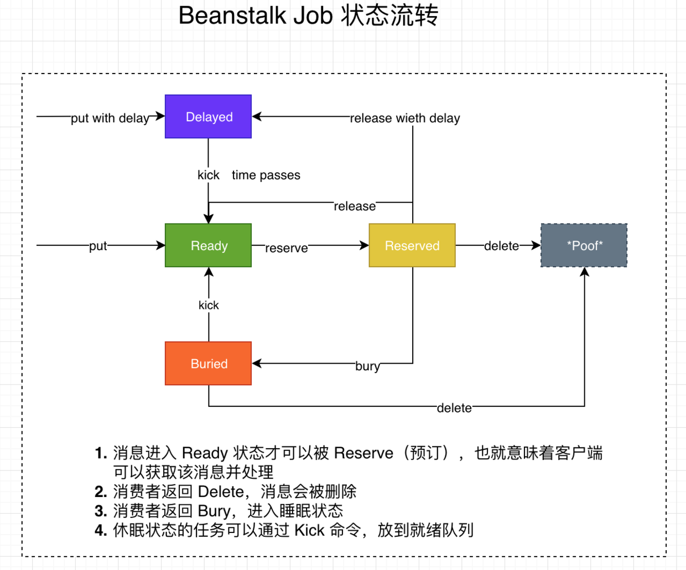
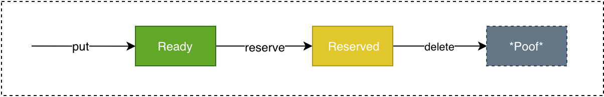
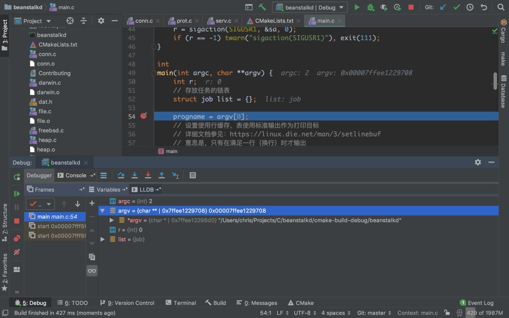
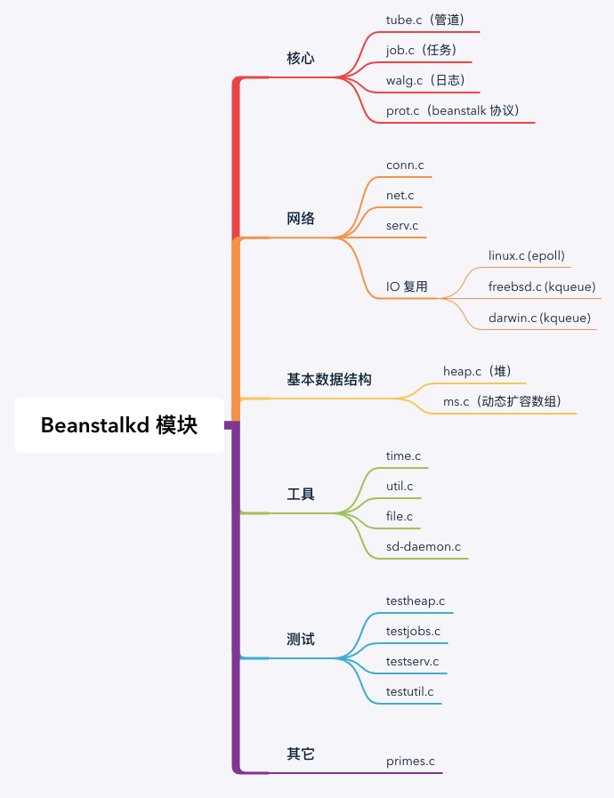
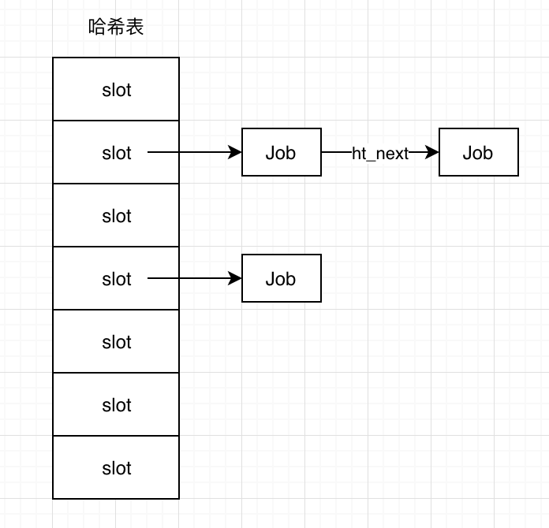
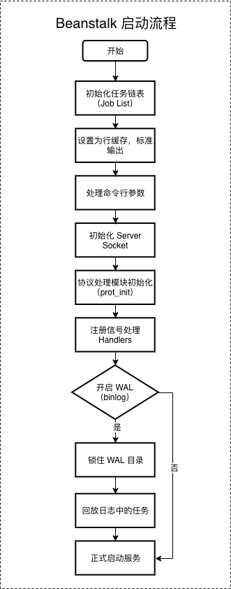

引言
Beanstalkd 是一个比较轻量级的消息队列服务，对于性能和稳定性要求不是特别高（相对于 RabbitMQ, Redis, Kafka 等），并且需要延迟执行任务的场景非常合适；此外，它也支持给任务设置不同的优先级、执行超时时间等。
在我们的业务中，经常会借助 Beanstalkd 执行队列任务，常见的用例如下：
- 用户完成会员购买并激活后，发送私信通知、重置账号重命名状态等；
- 用户完成评论后，异步更新评论计数；
- 用户对私家课收听记录上报后，异步更新最近收听的小节、累积收听时长、同步到其它系统等；
- 用户记录添加后，会同步至 Redis，为保证数据库和 Redis 的数据最终一致性，会提前启动一个延迟校验的任务（如 5s 后），检查 Redis 中与数据库记录是否一致。
Beanstalkd 初识
特点
- 基于 TCP 并采用 ASCII 编码的文本协议。详细定义参见：protocol.txt：
- 客户端负责与服务端的交互：连接、发送命令和数据、等待响应、关闭连接
- 服务端串行处理每个客户端连接
- 协议由两个部分组成：文本行（用于客户端命令和服务端响应）和非结构化的数据块（用于传送任务 body 和 stats 信息）
- 队列消息是存储在内存中的，但用户可以选择开启 WAL 机制（binlog），这样重启后可以回放任务，提高了可用性
- 采用类似 Redis 的单线程模型（IO 多路复用机制），因此不必考虑多线程环境下线程同步、加锁等，简化实现
关键词
- Tube：类似 Kafka 中的 Topic，或者其它队列系统中的 Channel
- Job：客户端生产和消费的基本单元。每个任务都有特定的 id，可设定优先级，超时时间，延迟执行时间等
- WAL (Write Ahead Log)：负责 binlog 管理（写入、压缩、日志文件清理、任务恢复等）
- Server：Beanstalkd 服务端
- Conn：Beanstalkd 客户端连接处理
任务状态流转

任务典型生命周期

工作方式描述
- 服务端会有一到多个 tubes（在数组中维护）。每个 tube 都会包含一个就绪队列（在最小堆维护）以及一个延迟队列（也在最小堆维护）。每个任务都会在一个特定的 tube 中度过全部的生命周期
- 客户端可以使用
watch指令订阅某个 tube，也可以使用ignore取消订阅，消费者可以同时订阅多个 tube，当消费者reserve任务时，该任务可能来自其watch list中的任意一个 tube - 当客户端连接时，默认会使用
defaulttube，可以使用use切换 tube - tube 是会根据需要随时创建的，当没有客户端引用时，就会被删除
安装
借助 Docker 启动一个 Beanstalkd 服务非常轻松，请运行下面的命令行即可：
1 | docker run -d -p 11300:11300 schickling/beanstalkd |
如果上述命令行执行正常，则 Beanstalkd 服务应该启动了，其默认监听的端口号为 11300，运行 docker ps 可以查看服务是否正常启动并运行：

编译 & 运行 & 调试
首先，需要前往 beanstalkd 仓库克隆 Master 分支源码至本地。
为了方便管理 C 项目，这里使用了 JET BRAINS 家族的 Clion。当然，你也可以使用自己喜欢的工具打开。
由于 Clion 使用了 CMake 管理 C&C++ 项目，所以打开项目时需要在其根目录下创建一个 CMakeLists.txt 文件，并填写如下内容：
1 | cmake_minimum_required(VERSION 3.13) |
🎉 至此，准备工作已经做完啦。接下来，可以尝试点击「构建」按钮，进行编译。编译结束后，就可以点击运行启动 Beanstalkd 服务啦。哦，对了，如果需要调试支持的话，直接在需要的地方打上断点，并点击「调试」按钮即可开始。

关于 Makefile
查看 Makefile 文件，可以看到有如下几个命令可以执行：
make all: 编译、链接并生成可执行的二进制文件beanstalkd。由于我们已经将该命令放到CMakeLists.txt文件中，在使用 Clion 构建时可自动触发make install: 将生成的可执行文件beanstalkd安装到BINDIR=$(DESTDIR)/usr/local/bin目录下make clean: 清理生成的*.o文件make bench: 跑 Benchmark 用
客户端使用示例
下面看一个简单的例子。生产者负责将一组待抓取的 URLs 放到队列中，再由一组消费者并发访问队列中的 URLs。主流程的示例代码如下：
1 | // 会首先启动 NUM_WORKERS 个消费者在不同的线程中监听 |
生产者
1 | fn produce_urls() { |
消费者
1 | fn consume_urls(id: isize) { |
源码探索
模块分类图
为了方便阅读源码，粗略地根据自己的理解给各个文件做了简单的分类：

模块 UML 图
虽说 Beanstalkd 的源码是使用 C 编写的，但是其中的设计思想依然可以从面向对象的角度来解释。比如模块化设计、接口设计、多态等。根据自己的理解，对其中的一些核心模块做了梳理，并绘制了一个简单的 UML 图来加深理解：

基本数据结构
最小堆
二叉堆（Heap） 是一种很常见的数据结构，本质上是一棵完全二叉树。其分为最大堆（也叫大根堆） 和 最小堆（也叫小根堆）：
- 最大堆：根结点的键值是所有堆结点键值中最大者的堆
- 最小堆：根结点的键值是所有堆结点键值中最小者的堆
在 beanstalkd/heap.c 是对最小堆的实现。那么，beanstalkd 中哪些地方用到了最小堆呢？
- Tube 中的延迟任务队列（最先到期的任务会在堆顶，这样可以在 O(1) 时间复杂度获取到）
- Tube 中的就绪任务队列（基于优先级排列，优先级最高的任务会在堆顶）
- Server 中的客户端连接队列（基于 tickat 时间排列）
接下来，我们看看最小堆的实现：
1 | int |
变长数组
在 C 语言标准库中是没有可变长度的数组实现的，所以在 beanstalkd/ms.c 实现了一种类似的数据结构，它具有如下特点：
ms结构体维护一个可动态扩容的数组（**items）- 扩容策略很粗暴，直接扩充为原来容量的两倍
- 插入的平均时间复杂度为 O(1)
- 删除的平均时间复杂度为 O(1)
- 由于删除时，会将尾部 item 替换掉被删除的 item，所以不能依赖数组中的元素顺序（顺序不保证和添加时一致）
- 删除 item 后，其实数组占用的内存空间还在（并没有动态缩容的策略）
那具体在哪些地方用到了 ms 这种数据结构呢？梳理后，主要发现以下几处：
- 全局的 Tube 列表
- 客户端连接的
Conn中维护的 watch list - 与 Tube 关联的等待连接（conns）列表
下面看看其具体的实现：
1 | // 初始化数组，并注册插入和移除的回调函数 |
字典

在 beanstalkd/job.c 中，为了方便基于 job_id 快速定位到具体的任务，作者实现了一个字典数据结构。这里是和 job 耦合在一起实现的，根据对源码的分析，可以得出该字典数据结构的特点如下：
- 采用基于
job_id哈希取模的方式计算slot_id - 使用链地址法解决哈希冲突
- 根据负载因子自动进行 rehash（进行扩容或缩容），扩容或者缩容的系数根据 beanstalkd/primes.c 设置
- rehash 过程并没有采用类似 Redis 中渐进式 rehash 机制，而是阻塞式完成整个哈希表的 rehash 后才可以进行后续操作
存放 job 及 rehash 的详细源码分析如下：
1 |
|
链表
链表这种数据结构在 Beanstalkd 实现中用得比较频繁，比如
- beanstalkd/walg.c 中使用了单向链表的串联了一些列的日志文件（参见三个游标指针：
head,cur,tail） - beanstalkd/conn.c 使用双向链表连接了一些列被
reserve的任务
在 beastalkd/job.c，可以看到任务双向链表实现：
1 | int |
部分模块源码学习
main.c
1 | int |

serv.c
1 | void |
tube.c
1 | // 新建 tube，这里需要给定 tube 名称 |
job.c
在 Tube 中有两个最小堆数据结构分别存放被延迟的任何和就绪的任务，这两种使用的排序方式是不同的。我们看到在上面的 Tube 初始化时，给两个堆绑定了不同的比较大小的回调：
1 | t->ready.less = job_pri_less; |
以下可以看到具体的排序方式：
1 | // 回调函数，先基于优先级比较哪个小，再基于 id 比较哪个小 |
读后感
整个 Beanstalkd 的核心的代码不过五千行左右，但这就实现了一个生产级别的消息队列，的确是很厉害。不过，也正因为其实现比较简单，所以也没有提供类似 Redis 的主从机制等。当然，在这篇文章中，并没有完整地剖析所有的模块实现，只是列出了个人比较感兴趣的模块；关于 binlog 管理的源码（比如垃圾回收，压缩，预留空间申请，任务恢复等）只是粗略地阅读了下，就不在此处献丑啦~
总的来说，对于单机消息队列实现感兴趣的同学还是推荐阅读下该系统的源码，可以学习其中的一些设计思想，实现思路等~